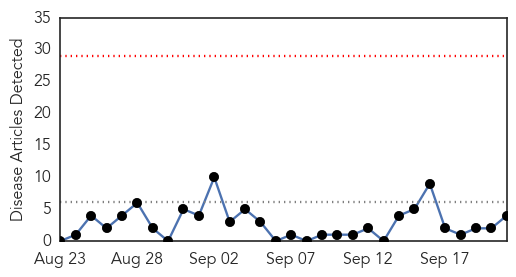
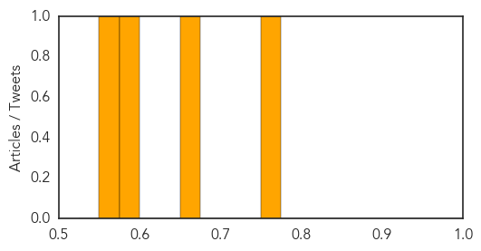

Dengue Fever
30-Day Web Trend
11 alerts, 1 warnings

30-Day Twitter Trend
0 alerts, 0 warnings

Article Locations

Article Confidences

Top Articles:
- 0.996
- Dengue threat
- 0.996
- 36-yr-old Succumbs To Dengue; Toll In Delhi At 22 Mobile Site
- 0.991
- Two cases of JE detected in Manipur's Imphal West
- 0.986
- Tainan Enterprises : mayor puts DPP duties on hold
- 0.985
- Not just Delhi, other states stung by dengue bite as well
- 0.981
- 12 deaths, 1,900 new cases in a week, dengue bite gets deadlier
- 0.979
- Why dengue threat could be up to 1,000 times bigger than you think
- 0.975
- Update: Dengue menace: Death toll rises to 14 - India
- 0.974
- 46 more cases in a day
- 0.966
- A new understanding of dengue virus
- 0.964
- After Punjab, Haryana, dengue scare in Chandigarh with 136 cases
- 0.957
- South Vietnam Has Most Dengue Fever Infections
- 0.947
- What the recurring dengue epidemic in Delhi reveals about us
- 0.936
- Are private hospitals in Gurgaon taking advantage of the dengue outbreak?
- 0.910
- Tehelka - Investigations, Latest News, Politics, Analysis, Blogs, Culture, Photos, Videos, Podcasts
- 0.909
- Set up separate 24x7 unit in each hospital: Centre
- 0.889
- Cabinet Secretary reviews preventive and clinical management measures to deal with Dengue
- 0.885
- What tests needed for diagnosing dengue?
- 0.870
- Taiwan university promotes dengue prevention to students
- 0.868
- 20 dengue cases reported in YMCA Faridabad so far, students accuse authorities of apathy
- 0.866
- To step up hospital care, Delhi govt opens fever clinics in 55 dispensaries
- 0.819
- Dengue that nobody wants to prevent
- 0.780
- The post-dengue prognosis
- 0.761
- J P Nadda reviews dengue treatment facilities in Delhi
- 0.737
- Delhi High Court seeks details of funds released for dengue control in Delhi
- 0.660
- Dengue: Centre Reviews Situation in Delhi, Other States
- 0.660
- Delhi Health Minister inspects two hospitals
- 0.625
- Dengue: Centre reviews situation in Delhi, other states
- 0.623
- India: Kerala State sees resurgence of diphtheria
- 0.591
- NCKU Raises Awareness on Dengue Prevention among International Students
- 0.558
- NCKU Raises Awareness on Dengue Prevention among International Students
- 0.549
- One doctor borrowed for 55 wards
- 0.529
- Dengue: Centre reviews situation in Delhi, other states
- 0.503
- Delhi HC seeks details of funds released for dengue control in Delhi
- 0.501
- Delhi High Court asks AAP government for details of funds released for dengue control
Top Tweets:
-
No tweets found for Sep 21, 2015
Hepatitis
30-Day Web Trend
0 alerts, 0 warnings

30-Day Twitter Trend
1 alerts, 0 warnings

Article Locations

Article Confidences
Top Articles:
- 0.766
- Upstate Restaurant Employee Tests Postive for Hepatitis A
- 0.668
- South Sudan: MSF and UNICEF provide treatment to 16,000 children in mass malaria campaign in Bentiu PoC
- 0.587
- Pfizer Announces Positive Top-Line Results from Two Phase 3 Trials of Oral Tofacitinib in Adults with Moderate-to-Severe Ulcerative Colitis
- 0.567
- Bodies launch Awareness drive at Mandi Ahmedgarh
Top Tweets:
-
No tweets found for Sep 21, 2015